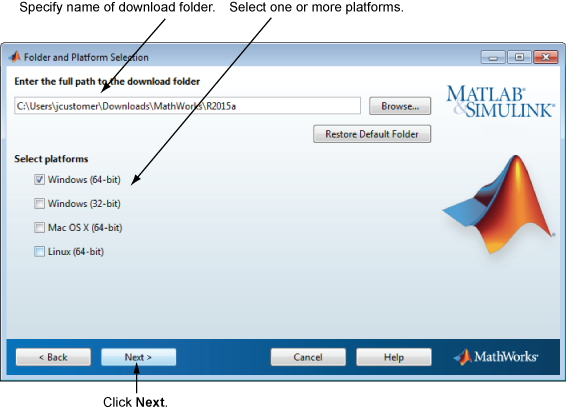

要指定下载选项，请执行以下操作：
指定要下载的 MathWorks® 产品所在的文件夹的名称。接受默认的下载文件夹或点击“浏览”选择其他文件夹。如果所选的文件夹不存在，安装程序将会进行创建。
指定文件夹名称时，可以使用任意字母数字字符和一些特殊字符（例如下划线）。安装程序会告知您指定的名称是否包含文件夹名称中不允许使用的字符。如果您在输入文件夹名称时出错并希望重新输入，请点击“还原默认文件夹”。完成选择后，点击“下一步”。

选择一个或多个平台。安装程序将下载适合所选平台的文件